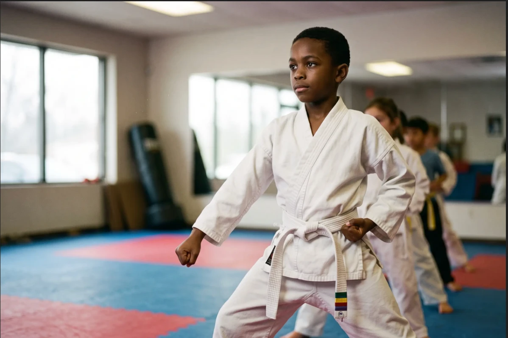
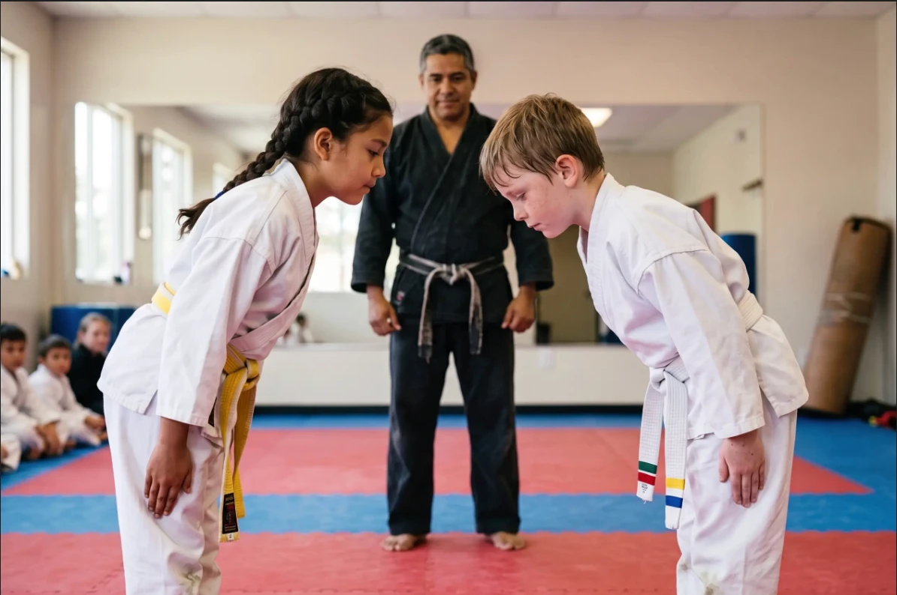
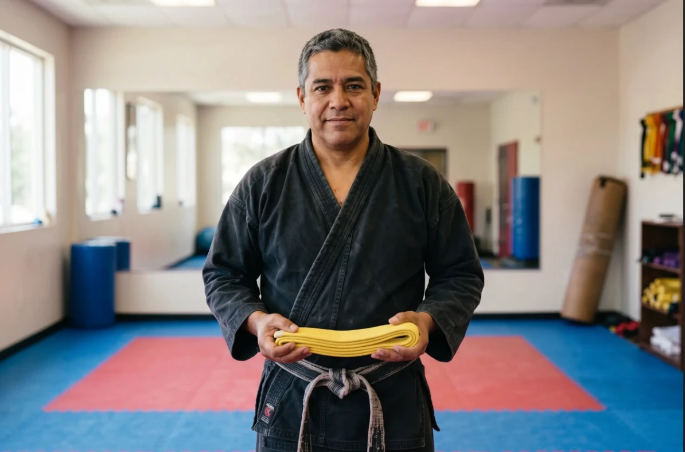

100% FREE · AGES 6–11A free 45-minute intro class for ages 6–11 — where kids think they're just having fun.
Takes 60 seconds. We'll email to confirm your time.
Ages 3–5? This class is built for them →
You're in! 🎉
Check your email — we'll confirm your class time shortly.
Sound familiar?
Getting through shouldn't feel like a battle. If you're watching one of these on repeat, you're not imagining it — and you're not the only one.
You've probably already tried a season of something — soccer, swim, gymnastics — hoping it would stick. The question isn't whether your kid is busy. It's whether anything is actually changing what you're seeing at home.
Here's the reframe
Focus, self-control, and confidence aren't personality traits your child either has or doesn't. They're physical skills — and karate teaches them the way kids actually learn: by doing, repeating, and winning small. Disguised, the whole time, as fun.
Holding a stance without wobbling — a whole body learning to stay put on purpose.
Stopping the instant the instructor says "stop" — the pause button, practiced until it's a habit.
Testing for the next belt in front of the whole class — earning it, out loud, in public.
45 minutes, start to finish

A fast, laughing game to burn off the after-school jitters and get everyone in the room, together.
One move — a punch, a block, a kick — taught step by step, slow enough to get right and celebrated when they do.
Working with another kid: taking turns, waiting, controlling the move. Self-control and respect, built in reps.
A 3-minute character lesson to close — focus, honesty, standing up for a friend. The part parents notice at home.
Progress you and your kid can both see
Every stripe and belt is a milestone your child earns and can point to — concrete proof that the focus and confidence are actually building.
From parents who were watching the same things
"His teacher pulled me aside at pickup — not to complain, for once — to ask what changed. He'd started raising his hand and finishing his work. That was three months into karate."
"Homework used to be a nightly fight. Now she sets a timer and just does it. I don't fully understand it, but I'll take it."
"He was the kid who never spoke up. Last week he told an older boy to stop picking on his friend — calm, not aggressive. I nearly cried."

Who's teaching
TODO: one warm paragraph — years teaching this age, why they love the 6–11 stretch (the age where the lessons really stick), and a human detail. Keep it about the kids, not the trophies.
TODO: rank/credential · trained specifically for ages 6–11
The class is free, and there's no contract to talk about. Your kid gets a vote — a real one. If they walk out and don't ask when they can go again, you've lost nothing but 45 minutes. And if they do ask? That's the only sign you need.
Good questions
It's the opposite — and it's structural, not a marketing line. Every class ends with a mat chat on self-control and respect, and the whole point of the training is learning when not to use it. Kids who feel more capable pick fewer fights, not more.
Perfect — this isn't a sport where the fastest kid wins. Progress is measured against your own child, one belt at a time. Plenty of our students started as the kid who sat out in gym class.
TODO: confirm with the school. (Common honest answer: small things — posture, eye contact, "yes ma'am" — show up in the first few weeks; the bigger focus-and-confidence shifts build over the first few months.)
TODO: real program pricing. No hard sell at the free class — if your kid loved it, we'll walk you through the elementary program and the schedule, plainly, with the real numbers.
TODO: confirm with the school and state it plainly — whether testing is included, and if there's a fee, exactly what it is. Don't leave this vague; hidden costs are the #1 trust-killer for this age group.
TODO: confirm with the school. (Common answer: yes — siblings in the 6–11 range are welcome in the same free class; a younger sibling under 6 is a better fit for the preschool class linked above.)